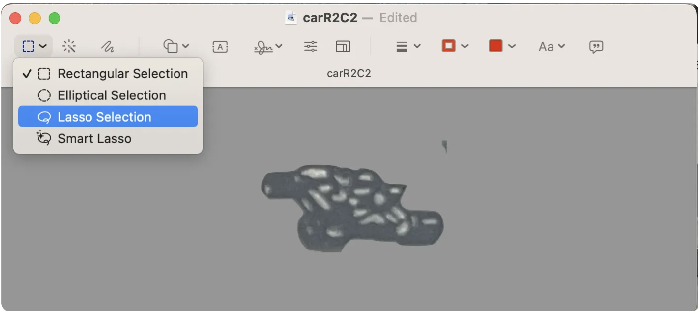
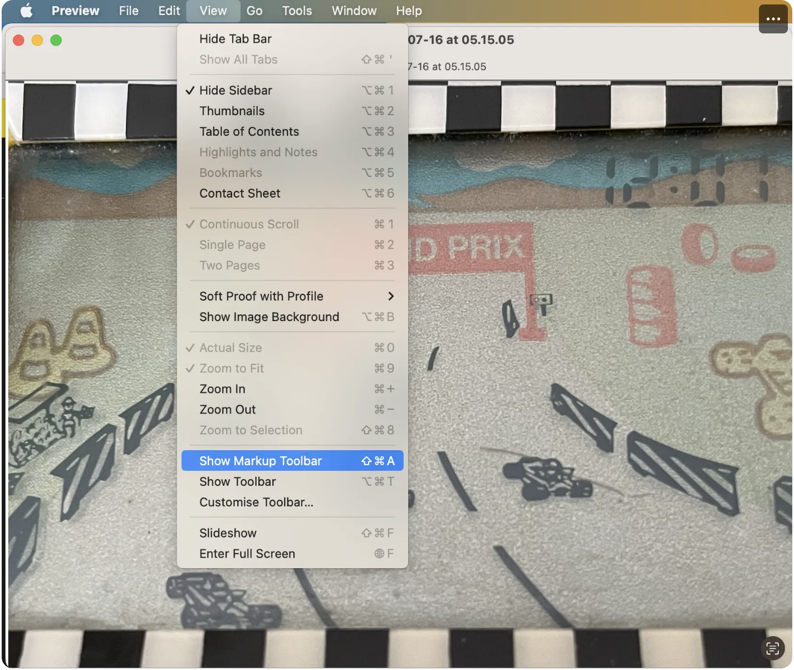

Hvordan laver man grafik bibliotektet til Grand Prix spillet (samt coolDownTimeren)
Spillet tager udgangspunkt i følgende bib-bib spil fra 1980’erne.

Grafikken er lavet ved at tage billeder af bib-bib spillet med en mobil telefon
Man markerer den bil man gerne vil gemme.
Og vælger “New from Clipboard”.
Man kan nu med den lille tryllestav vælge bilen
når man trykker delete (backspace) så slettes baggrunden, så den bliver transparent.
Note: Man kan også slette baggrunden ved brug af Losso Selection.
Bilerne i spillet er pladseret i en tabel
Vi navngiver derfor bilen vi gemte carR2C2 (det står for Row 2, Column 2)
Det er vigtigt at vi gemmer bilen i et nyt billede hvor siderne er lige lange. Dette gør at vi nemmere kan ændre størrelsen af billedet i spillet. Det er nemmest hvis man gør dette når man vælger bilen man gerne vil gemme. Man kan dog også gøre det bagefter ved at gøre følgende:
Dette gøres ved at markere billedet og trykke Control-C (copy)
Vælge Tools og Adjust Size:
Slå låsen fra og tilrette Width og Height til at være den største værdi af de to værdier
Herefter kan man markere indholdet
Slette indholdet og paste bilen som vi kopierede ind.
Vi skal også bruge et baggrundsbillede uden biler. Vi skal derfor fjerne bilerne fra baggrundsbilledet. Vælg først “Show Markup Toolbar”
og herefter Lasso Selection
Vi markerer et område ved siden af bilen som vi gerne vil fjerne:
Og trykker Control-C og Control-V. Herefter kan vi flytte området over den bil som vi vil fjerne
Hvorefter bilen er forsvundet
Vi skal også gemme små lydklip:
Lydene til spillet kan klippes fra følgende video: https://youtu.be/HNGhO1ZJgUE
Dette gøres ved at oprette en ny Movie i iMovie
og importere videoen
Hvorefter man skal trække videoen ned
Man kan zoome på den her slider vist øverst til højre på billedet nedenfor og finde det lydklip som man gerne vil lave til en mp3 fil med.
Man kan nu vælge Split Clip på begge sider af lydklippet
Og slette højre og venstre side, så der kun er det lille lydklip tilbage.
Man kan nu vælge File → Share → File
Og gemme det som Audio only + MP3 format
Vi skal også pladsere bilerne på baggrundsbilledet. Vi starter med at oprette en mappe ved navn images

Her vælger vi Upload file
Og trækker alle billederne ind (man kan vælge alle billederne og trække dem alle ind samtidig)
Vi starter med at lave en ny fil ved navn library.js
Vi skal huske at referere til den i index.html filen (den skal stå før sketch.js)
I library.js skal vi importere alle grafik elementerne. Dette gøres i preload funktionen som bliver kørt inden setup funktionen (så billerne er loadet ind og klar til brug når programmet starter med at afvikle)
I Grand Prix spillet er bilerne arrangeret i en tabel
For at overskue koordinaterne til bilerne samt deres størrelse bedst mulig kan man oprette hver bil som et imageObject og lægge dem ind i en tabel. Her betyder carPos[0][0] række 0 og kolonne 0. carPos[0][1] betyder række 0 og kolonne 1 osv. Og have en funktion til at vise hver bil i tabellen (displayCar).
De objekter der ikke er i en tabel (f.eks. manden med flaget) kan vi bare vise uden først at putte dem ind i et image objekt.
I sketch.js skal vi bare vise alle objekterne
Når vi har lavet setup’et i library.js og sketch.js, så er det bare et spørgsmål om tid og fokus for at få pladseret alle grafik elementerne korrekt.
Vi har også behov for at have en timer der tæller ned fra et antal millisekunder. Her kan man sætte et coolDownInterval f.eks. 1000 ms (dvs 1 sekund). Man kan starte, så this.cookDownTimer sættes til værdien af millis(). Når man kalder funktionen coolDownTimeLeft, så returneres coolDownInterval (f.eks. 1000) minus forskellen mellem den nye værdi af millis() og den værdi som millis() havde da vi startede timeren, dvs. at timeren tæller ned fra 1000 millisekunder.
How to create the graphics library for the Grand Prix game (and the coolDownTimer)
The game is based on the following bib-bib game from the 1980s.
The graphics are made by taking pictures of the bib-bib game with a mobile phone
You select the car you want to save.
And choose “New from Clipboard”.
You can now select the car with the magic wand
when you press delete (backspace) the background is deleted, so it becomes transparent.
Note: You can also delete the background using the Lasso Selection.
The cars in the game are placed in a table
We therefore name the car we saved carR2C2 (it stands for Row 2, Column 2)
It is important that we save the car in a new image where the sides are of equal length. This makes it easier for us to change the size of the image in the game. It is easiest if you do this when you select the car you want to save. However, you can also do it afterwards by doing the following:
This is done by selecting the image and pressing Control-C (copy)
Choose Tools and Adjust Size:
Unlock the lock and adjust Width and Height to be the largest value of the two values
Then you can select the content
Delete the content and paste the car we copied in.
We also need a background image without cars. We therefore need to remove the cars from the background image. First select “Show Markup Toolbar”
and then Lasso Selection
We select an area next to the car we want to remove:
And press Control-C and Control-V. Then we can move the area over the car we want to remove
After which the car has disappeared
We also need to save small sound clips:
The sounds for the game can be cut from the following video: https://youtu.be/HNGhO1ZJgUE
This is done by creating a new Movie in iMovie
and import the video
Then you have to drag the video down
You can zoom on this slider shown at the top right of the image below and find the sound clip you want to make into an mp3 file.
You can now select Split Clip on both sides of the sound clip
And delete the right and left side, so that only the small sound clip remains.
You can now choose File → Share → File
And save it as Audio only + MP3 format
We also need to place the cars on the background image. We start by creating a folder named images
Here we choose Upload file
And drag all the images in (you can select all the images and drag them all in at the same time)
We start by creating a new file named library.js
We must remember to refer to it in the index.html file (it must be before sketch.js)
In library.js we need to import all the graphic elements. This is done in the preload function which is run before the setup function (so the images are loaded and ready for use when the program starts to execute)
In the Grand Prix game, the cars are arranged in a table
To best manage the coordinates for the cars and their size, you can create each car as an imageObject and put them in a table. Here carPos[0][0] means row 0 and column 0. carPos[0][1] means row 0 and column 1, etc. And have a function to display each car in the table (displayCar).
The objects that are not in a table (e.g. the man with the flag) we can just display without first putting them into an image object.
In sketch.js we just need to display all the objects
Once we have made the setup in library.js and sketch.js, it is just a matter of time and focus to get all the graphic elements placed correctly.
We also need to have a timer that counts down from a number of milliseconds. Here you can set a coolDownInterval e.g. 1000 ms (ie 1 second). You can start, so this.cookDownTimer is set to the value of millis(). When you call the function coolDownTimeLeft, it returns coolDownInterval (e.g. 1000) minus the difference between the new value of millis() and the value that millis() had when we started the timer, ie. the timer counts down from 1000 milliseconds.